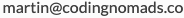

CodingNomads Mentorship Process¶
This document contains a breakdown of the logistics surrounding our mentorship process, with links to other documents with more in-depth descriptions.
Starting to work with a student¶
After you've become a part of our Mentor Community, we will want to connect you with students. This happens as follows:
- We reach out to you to see if you're available to take on a new student
- When you accept, we send you the student's background info
- You reach out to your new mentee in order to schedule an orientation call. Please send a calendar invite and the contact method you'll use to get in touch. \ If you want, you can use Doodle to find a common time slot.
- We use Zoom to record all meetings for the student and our records. Here's info on Using Zoom for scheduling, video sessions, and recordings.
- During your orientation call, you will schedule your standing weekly 1-on-1 call
Orientation Call¶
This will be the first time that you and your mentee meet. Take some time to get to know them and discuss their goals and expectations for the course.
Setting clear expectations as well as clearly knowing why the student is taking the course is incredibly helpful for themselves, and for you to keep them accountable.
CORE DUTY #1: Making your support felt¶
Our students need to know that you are with them and care for their progress. Reach out to them regularly to ask how things are going, or share an interesting link with them. We want each of our mentors to make every student feel truly supported.
If possible, think of your students more as friends rather than sticking to a stiff and formal student-teacher relationship. Like good friends, we want students to feel that we are here for them when they need us. Laughter and friendship go a long way in making sure the learning process is fun, and therefore also productive.
Get to know your student¶
When you are assigned to a student, we will send you their background info.
Use your first call to ask them about themselves, and tell them a little bit about yourself as well. Getting to know each other and exchanging personal thoughts is often nicer on a video call than in writing.
We also recommend keeping a document with info about your students. It helps to keep track of their individual wishes, motivations, and concerns. These notes are for yourself, but ultimately to improve the individual experience for each of your students. If you want you can copy and use the example draft below:
Stay up-to-date with your students' progress¶
Knowing where your students are currently at, what they have succeeded to do and what they might be struggling with, is an important piece in making them understand that we care for their learning process and progress. Our platform offers ways to stay up-to-date with your students' progress. Here are instructions on how to find your students' progress logs. Please bookmark these pages for quick access.
Before your call, make sure to check where they are at. This will also help you find topics to discuss if your student doesn't have any specific questions.
Student submissions and grading¶
Our platform includes auto-graded submissions, as well as other types of submissions that are set up to be manually graded.
We are planning to include some form of grading into the mentor's responsibilities since it is motivating for students to see written feedback and encouragement regarding their submissions when done by a thoughtful and supportive mentor.
However, the way these manual submissions are currently set up is only as check-in points for students. Therefore, you do not currently need to grade student submissions.
CORE DUTY #2: Weekly 1-on-1 calls¶
Alongside with making sure our students feel supported and taken care of during their learning process, the weekly 45-minute 1-on-1 calls are what constitute our core mentorship offering.
Set a fixed meeting time¶
Schedule the 1-on-1 with your student at a fixed recurring time every week. Send a recurring calendar invite for your weekly meetings so it's on both your calendars.
Use your first call to lock in a time slot, then stick to it. No one enjoys the back-and-forth of trying to figure out a time, and we're aware that you have more important (and more fun) things to do with your time.
What to talk about?¶
During your 1-on-1 call, you review their labs together and discuss their code. These labs are the content of their aforementioned submissions. “Grading” these submissions, therefore, happens in a live discussion with the student, rather than separate from the call. This allows students to ask specific questions and brings about a more organic discussion regarding their code.
You will discuss challenging concepts from the course materials if the student has not quite gotten a grip on them yet. Interested students have interesting questions! Help them find the answers. You are there to help them get unstuck, and help them learn how to get unstuck by themselves.
Finally, you will help them create study schedules, set realistic expectations, and check in with them on their progress. You are there to hold them accountable for their plans. Help them set generous plans for themselves so that they will be able to stick to their plans.
In short, during your 1-on-1 session you should:
- Review labs and project code together
- Discuss course-related concepts
- Answer student questions
- Help them schedule and stick to their plans
Record your video sessions¶
Please, screen-record every student 1-on-1 call. Having their mentor session recorded is useful for the students because then they can refer back to the video file after their call.
Students can thereby re-watch helpful parts of a meeting. Some students will be more relaxed during the call since they know they can always come back and check if they think they missed something. It also helps us to refer to a shared resource, if any problems should arise.
Recorded sessions also give us the possibility to provide feedback and suggestions to you regarding mentorship. We won't peek into your sessions unless you ask for feedback, or in case there seems to be any trouble. We will always communicate this to you beforehand, and accessing your video recordings will always happen while in communication with you.
Session Reports¶
At the end of each session, we ask you to give a short report on how it went that day.
Linked below you will find a Google Form with a few questions.
Please bookmark this form, and submit a filled-out copy after every call. This recap will not be visible to your student nor to other mentors, but only to you and the CodingNomads team.
We want to keep it short so it doesn't take much of your time. However, consistently keeping short recaps is helpful.
Time tracking with Toggl¶
To keep track of the time you spend on mentoring your students, please use the Toggl time tracker. Toggl is easy to use and makes time tracking (nearly) effortless. Your Toggl Report will be submitted with your invoice each month for payment.
Troubleshooting¶
Check out our FAQ page.
Mentor support and questions¶
If anything regarding the mentorship process is unclear and isn't covered by this document, or if something else went wrong that you need to talk to someone about directly, please feel free to reach out on Slack to me (@Martin Breuss) or Ryan (@Ryan Desmond) or per email: .
If you have questions in regards to your payment, or the payment process in general, please reach out to  .
.
- Mentorship Contact:
- Payment Contact: